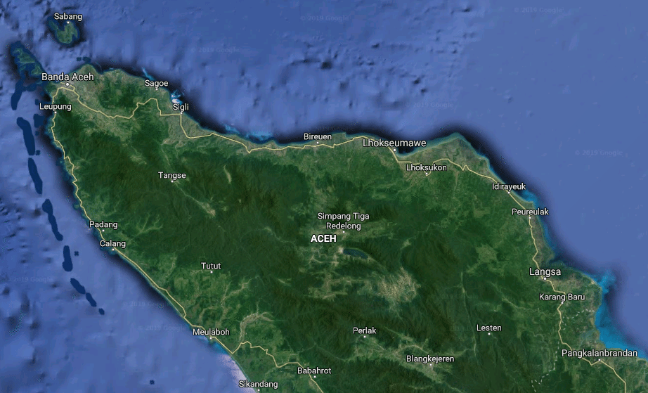
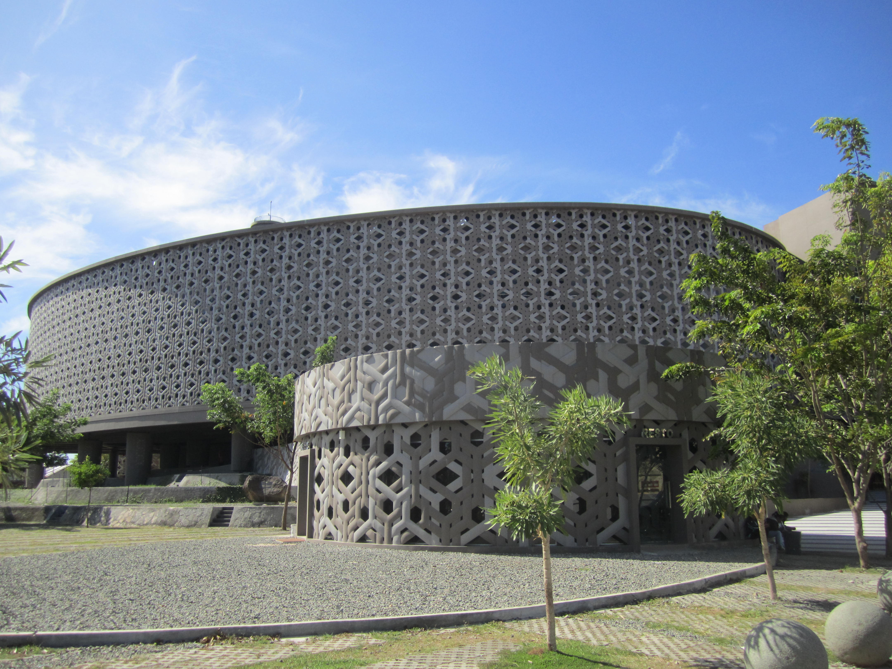

Sejarah

Aceh pertama dikenal dengan nama Aceh Darussalam (1511–1945). Provinsi ini dibentuk pada 1956 dengan nama Aceh sebelum diubah menjadi Daerah Istimewa Aceh (1959–2001), Nanggroe Aceh Darussalam (2001–2009), dan kembali ke Aceh sejak 2009. Sebelumnya, nama Aceh biasa ditulis Acheh, Atjeh, dan Achin.
Saat ini satuan pemerintahan daerah yang berstatus Daerah Istimewa di Indonesia hanya dua provinsi yaitu Aceh (UU Nomor 44 Tahun 1999) dan Provinsi Daerah Istimewa Yogyakarta (UU 13 Tahun 2012). Berdasarkan status pemerintahan daerah yang bersifat istimewa, UU Nomor 44 Tahun 1999 tentang Penyelenggaraan Keistimewaan bagi Daerah Provinsi Istimewa Aceh telah memberikan legitimasi secara yuridis formal keistimewaan.
Geografis
Aceh menempati wilayah ujung paling barat di pulau Sumatra dan Negara Indonesia, di mana titik terluar Negara Kesatuan Republik Indonesia terletak di Pulau Rondo, sementara itu kilometer Nol Indonesia berada di pulau Weh. Secara geografis Aceh terletak antara 2° - 6° lintang utara dan 95° – 98° lintang selatan dengan ketinggian rata-rata 125 meter diatas permukaan laut. Batas batas wilayah Aceh, sebelah utara dan timur berbatasan dengan Selat Malaka, sebelah selatan adalah satu-satunya perbatasan darat dengan Sumatra Utara dan sebelah barat dengan Samudera Hindia.
Luas Aceh 5.677.081 ha, dengan hutan sebagai lahan terluas yang mencapai 2.290.874 ha, diikuti lahan perkebunan rakyat seluas 800.553 ha. Sedangkan lahan industri mempunyai luas terkecil yaitu 3.928 ha. Cakupan wilayah Aceh terdiri dari 119 pulau, 35 gunung dan 73 sungai utama.
Pariwisata
Sejak adanya Museum Tsunami Aceh menjadi tujuan untuk berlibur bagi indonesia dan macam negara. Dan juga kupi Aceh menjadi minuman khas aceh.
Meseum Tsunami Aceh
Museum Tsunami Aceh merupakan salah satu tempat wisata Aceh yang wajib dikunjungi wisatawan selama menghabiskan waktu di provinsi tersebut. Museum ini merupakan monumen untuk mengenang bencana gempa dan tsunami yang melanda Aceh tahun 2004 silam. Bangunan yang terletak di Banda Aceh ini menyimpan berbagai benda yang menggambarkan betapa dahsyatnya bencana tersebut, sekaligus juga menjadi pusat pendidikan dan evakuasi jika bencana tsunami kembali terjadi.
Laut Tawar

Danau Laut Tawar di Aceh berada di atas Dataran Tinggi Gayo, serta dapat ditempuh sekitar tujuh jam dari Banda Aceh. Saat berwisata di danau yang dikelilingi bukit ini, pengunjung dapat menyewa kapal untuk berlayar ke tengah danau. Panorama yang indah membuat tempat wisata Aceh ini sayang untuk dilewatkan.